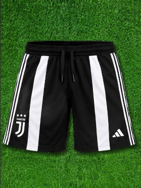

Juventus
La pantaloneta de la Juventus refleja la elegancia y la tradición del gigante italiano. Diseñada en color negro con sobrias franjas verticales blancas, está confeccionada en poliéster de alto rendimiento con tejido antitranspirante y de secado rápido. Garantiza máxima frescura, ajuste cómodo y libertad de movimiento para entrenar o complementar tu kit deportivo con el escudo de las tres estrellas.
$115.000